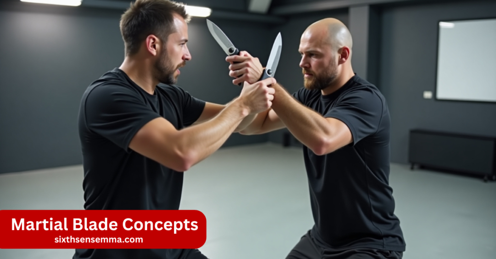
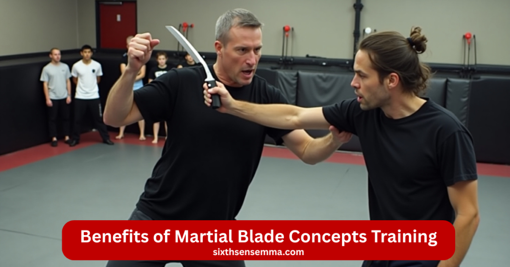
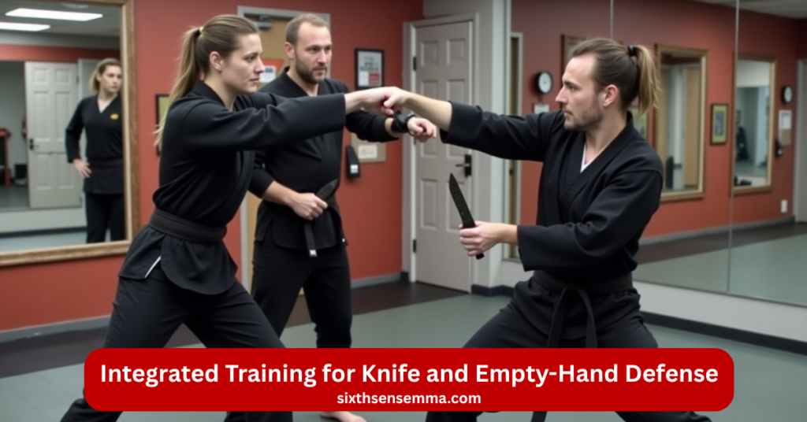

Martial Blade Concepts Knife Defense at Sixth Sense MMA

A knife self-defense program called Martial Blade Concepts provides practical techniques that you can employ in an emergency. At Sixth Sense MMA, we help you learn how to use a folding knife safely, step by step. The training is clear, controlled, and focused on helping you protect yourself. It’s good for anyone whether you’re new or already training in martial arts.
Why Train in Martial Blade Concepts at Sixth Sense MMA
Training in Martial Blade Concepts at Sixth Sense MMA means you’re learning a serious, real-world self-defense system in a focused and professional environment. Our program is built for people who want more than just theory we teach practical knife defense skills you can actually use. You’ll be guided step by step by trained instructors, work in small groups for personal attention, and follow a structured curriculum that focuses on safety, legal awareness, and confidence.
Certified & Highly Skilled Instructors
Our instructors have gone through official Martial Blade Concepts certification, which includes rigorous testing and teaching practice under Michael Janich’s standards. They offer real expertise in anatomy-based knife defense and legal self-defense. You’re not learning gimmicky moves you’re learning precise, proven methods from fully trained teachers.
Step-by-Step Curriculum for Every Level
We follow a clear, progressive plan. You’ll begin with knife grip, deployment, and anatomy targeting. Next, you’ll learn defensive counters, disarms, and controlled sparring routines. Each lesson builds on the previous one, making sure you advance steadily whether you’re a beginner or seasoned martial artist.
Safe Training with Proper Gear
Your safety is our top priority. We train with lifelike practice knives, plus protective gear for hands and arms. Every drill and sparring session is closely supervised to ensure control and realism. You’ll develop confidence in using a blade without risking your safety.
Clean Gym with a Supportive Atmosphere
Our training space is clean, organized, and focused on real skill development. We foster respect and responsible behavior no intimidation, no aggression. It’s a community where members encourage each other and learn together in a calm, respectful space.
Small Classes for Personal Progress
We keep class sizes small so instructors can give each student direct feedback. That means better attention to your grip, stance, and technique. You’ll learn faster and more effectively, and instructors can tailor guidance to your individual needs.

Benefits of Martial Blade Concepts Training
Martial Blade Concepts (MBC) training gives you real, useful self-defense skills that work under pressure. You learn how to secure yourself exactly, respond fast in tight spaces, and handle a knife in a safe and legal manner. It sharpens your focus, improves your reflexes, and teaches you how to stay calm during a threat. This training isn’t just for martial artists it’s valuable for anyone who wants to feel more prepared and confident in real life.
Builds Real Self-Defense Confidence
Martial Blade Concepts teaches you how to stop an attacker quickly using simple, proven techniques. You’re not learning fancy moves you’re learning skills that work in real-world situations. This boosts your confidence, so you know exactly how to act if someone confronts you unexpectedly.
Sharpens Mind, Reflexes & Reaction Time
MBC flow drills teach your body and mind to react more quickly under duress. By practicing essential techniques repeatedly, your brain starts to react automatically even when you’re stressed. This kind of training helps you stay calm and decisive when it matters most.
Learn Legal, Controlled Knife Usage
You’ll learn how to use a folding knife within legal boundaries. MBC focuses on “stopping power,” which means disabling an attacker without doing more harm than needed. This makes your defense action stronger and legally safer if you ever need to explain it later .
Boosts Awareness in Close-Combat Situations
Knife attacks happen close and fast. MBC training teaches you how to control distance, sense danger, and respond in tight spaces. This awareness is useful outside training too helping you stay alert wherever you go .
Practical for Civilians, Security & Law Enforcement
MBC is built to work with everyday tools like folding knives, pens, or flashlights making it practical for anyone. Whether you’re a civilian, security professional, or police officer, you’ll learn methods that are easy to use, pressure-tested, and easy to apply in real life .
What You’ll Learn in Our Martial Blade Concepts Classes
In our Martial Blade Concepts classes, you’ll learn how to control and use a folding knife for real-life self-defense. We teach proper grip, fast and safe deployment, and where to target for quick, effective results. You’ll also practice flow drills, sparring, and how to use everyday tools like pens or flashlights as defensive options. Every lesson is clear, step-by-step, and focused on safety and control.
Knife Grip, Guarding & Quick Draws
You’ll learn how to grip a folding knife securely and draw it quickly when needed. You’ll practice both forward and reverse grips, which help you handle different scenarios. These drills teach muscle memory for drawing the blade smoothly and with control, not fumbling when it matters most.
Targeting Vital Zones (Tendons, Arms, etc.)
You’ll be taught how to strike specific parts of the body like tendons, nerves, or joints to stop an attacker fast. This method focuses on disabling rather than causing permanent harm, which is central to MBC’s approach to knife defense .
Disengagement & Legal De-escalation
You’ll learn moves that help you safely step back and calm a situation, even after knife contact. This isn’t about going all out it’s about controlling what you do, staying within legal boundaries, and using only enough force to get to safety .
Defensive Sparring Drills
These aren’t competitive fights. In our classes, you’ll do controlled sparring meaning real movement under supervision. It’s like a drill where you respond to threats with knife-in-hand tactics. This is where technique meets real-life pressure.
Adapting Blades, Pens & Flashlights
You’ll see how the same mechanics apply when using everyday tools, such as tactical pens or flashlights. MBC teaches that the same skills work whether you have a knife or another object in your hand, making your training more flexible and practical .
Who Should Join Martial Blade Concepts Classes?
These classes are for anyone who wants to learn practical knife defense. Whether you’re a beginner curious about self-protection, a martial artist wanting to add blade skills, or someone working in law enforcement or security, this training is for you. Even if you just carry a knife for everyday use, you’ll learn how to handle it responsibly and with confidence.
Beginners Interested in Knife Defense
If you’ve never handled a blade before but want to learn practical self-defense, MBC is an ideal starting point. It helps you develop safe habits from day one like how and when to draw your knife, where to aim, and how to stay calm under pressure.
Martial Artists Adding Blade Skills
Already practicing arts like BJJ, Muay Thai, or Krav Maga? MBC adds a new layer by teaching tactical awareness and knife control. You combine what you already know with realistic edged-weapon use, gaining more tools to respond in close-combat or weapon-based situations .
Law Enforcement & Security Personnel
If your line of work requires situational control or dealing with weapons, MBC offers skillsets tailored to your needs. It emphasizes legal use, critical decision-making under stress, and anatomical targeting skills that help you perform confidently and responsibly on the job .
Everyday Carry (EDC) Enthusiasts & Safety-Conscious Adults
Carry a folding knife or everyday tool for utility or personal safety? MBC teaches you how to use those tools effectively for defense. It’s not about aggression it’s about being prepared, aware, and capable of responding appropriately in dangerous moments .
Programs for Every Age Group
At Sixth Sense MMA, our Martial Blade Concepts programs are designed to suit different age groups and experience levels. Whether you’re just starting or looking to refine your skills, we offer age-appropriate training that balances safety, effectiveness, and growth. Each group gets a focused approach to meet their physical needs and learning style.
| Age Group | Program Focus | Key Benefits |
|---|---|---|
| 16–20 Years | Beginner Blade Defense | Learn the basics, build awareness, and gain control |
| 21–35 Years | Full Martial Blade Concepts Training | Advanced techniques, fast decision-making, real skills |
| 36+ Years | Low-Impact Knife Defense | Safe, practical training with emphasis on control |
Real-Life Application of Blade Defense Skills
Martial Blade Concepts isn’t just for training indoors. It’s made for real situations you might face in everyday life. This section shows how the skills you learn can help protect you, your family, and others in unsafe moments at home, in public, or during emergencies.
Home & Personal Protection Readiness
You’ll learn how to keep yourself and your home safe if someone tries to attack or break in. We show you how to use a knife the right way, without panic. It’s about knowing when and how to react to keep your space safe and your family protected.
Handling Close-Range Threats with Confidence
Many real-life threats happen up close and without warning. This training helps you stay calm and think clearly when someone’s in your space. You’ll learn how to move smartly, protect yourself, and stay in control even if things get intense.
Emergency Response Using Edged Tools
In some situations, help may not be around. You’ll learn how to use a folding knife or tool safely and legally if you need to protect yourself. We teach you how to respond without going too far, keeping things under control the right way.

Integrated Training for Knife and Empty-Hand Defense
You won’t always be holding a knife. That’s why we teach you how to defend yourself both with and without a weapon. These classes help you mix blade defense with hand-to-hand skills, giving you more ways to stay safe in real life.
Switching Between Knife and Hand Techniques
Sometimes you might have to draw your knife after using your hands. We teach you how to switch between open-hand moves and knife defense smoothly. It keeps you ready whether you’re armed or not.
Combining MBC with Other Martial Arts Styles
If you already train in something like BJJ, Muay Thai, or Krav Maga, this training will make your skills even stronger. You’ll learn how to blend what you know with practical knife defense, giving you a complete approach to real-world safety.
Transitional Drills for Real Combat Scenarios
Real situations change quickly. One moment you’re blocking a punch, the next you might need to draw your knife. These drills help you react fast, switch techniques smoothly, and stay in control no matter how the situation changes.
Contact Us | Start Your Martial Blade Training Today
Thinking about joining our Martial Blade Concepts classes?We are available to assist you regardless of your level of martial arts experience. Our team is friendly, supportive, and ready to answer your questions. Fill out the form, give us a call, or drop by the gym.
Customer reviews
Felt Confident After Just a Few Classes
– Ahsan R.
I had zero experience before this. The instructors were patient and clear. I already feel more aware and confident walking alone.
Best Training for Real-World Safety
– Bilal Khan
As someone who travels a lot, I wanted practical self-defense. MBC at Sixth Sense MMA gave me solid, real-life skills.
Great Mix of Discipline and Support
– Sarah M.
I joined to learn knife defense, but I got more than that. The classes are respectful, safe, and really build your focus.
Professional Instructors, Real Skills
– Usman Javed
They don’t just teach theory. Every drill is hands-on, useful, and done with care. I highly recommend it for anyone serious about defense.
Call to Action
Martial Blade Concepts is not just about learning how to use a knife it’s about building real confidence, safety awareness, and the ability to protect yourself if needed. At Sixth Sense MMA, we teach practical, step-by-step skills that work in real life. Whether you’re just starting or already have experience, this training can help you stay sharp, stay safe, and grow stronger mentally and physically.
FAQ’s
Martial arts focus on respect, control, self-defense, and discipline. You learn how to stay calm, move with purpose, and protect yourself if needed. It also teaches balance and awareness. These lessons help both in training and real-life situations, building confidence and focus.
Blade is trained in many martial arts, including Filipino Kali for knife fighting, Jeet Kune Do for speed and flow, and Muay Thai for powerful strikes. He also uses Karate and even Capoeira in some scenes. This mix gives him strong fighting skills against all types of enemies.
Michael Janich usually carries the Spyderco Yojimbo 2, a folding knife he helped design. It has a strong, straight-edge blade that gives clean cuts and a firm grip. The knife fits his training style and is made for real-world self-defense with control and safety in mind.
Filipino martial arts like Kali or Eskrima are among the best for knife defense. These arts focus on movement, timing, and reacting fast. Martial Blade Concepts is also highly useful, teaching legal, practical techniques that help you stop an attacker quickly and safely under pressure.
Blade doesn’t have common vampire weaknesses like sunlight. But he still struggles with blood thirst. If he doesn’t take his serum, he can lose control. His anger and loneliness also make him vulnerable. These emotional challenges can affect his choices during dangerous missions.
Blade was trained by Abraham Whistler, a vampire hunter. Whistler taught him how to fight, use weapons, and control his powers. Over time, Blade also learned from other fighters, but Whistler gave him the foundation he needed to hunt vampires and defend people.
An SRK (Survival Rescue Knife) is a strong, fixed-blade knife made for survival and rescue. It’s designed for cutting, chopping, or even prying. Many military and rescue teams use it because it’s dependable. It’s a solid choice when you need a strong, versatile tool.
The CIA doesn’t confirm what knives they use, but many agents carry compact knives like the Emerson CQC-7 or Benchmade SOCP. These knives are strong, quick to open, and easy to hide. They’re built for real situations where speed and reliability matter most.
Train with us in Coppell
The first class is free. Shorts, a t-shirt and a water bottle. We lend the rest.
Book a free class